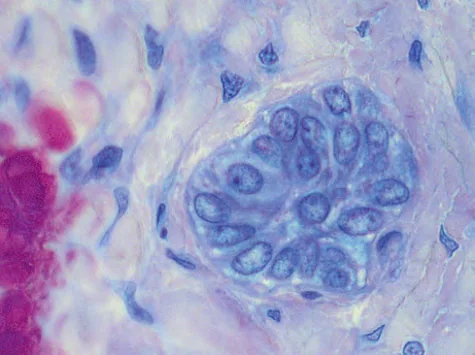
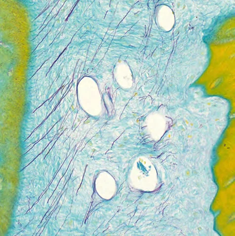

نسخه استخراجشده؛ ترجمه یا تأیید علمی انجام نشده است. وضعیت: captured
PDL فقط یک دستهی طناب کلاژنی نیست؛ بافتی زنده و پرسلول است که چهار گروه سلولی دارد:
سلولهای سازنده (Synthetic):فیبروبلاست که فراوانترین سلول PDL است، بههمراه استئوبلاست و سمنتوبلاست. فیبروبلاست PDL ویژگی خاصی دارد: هم کلاژن میسازد و هم کلاژن قدیمی را میبلعد و تجزیه میکند.
سلولهای تحلیلبرنده (Resorptive):استئوکلاست و سمنتوکلاست که در بازسازی و پاسخ به نیرو نقش دارند.
سلولهای بنیادی و پیشساز: سلولهای مزانشیمی تمایزنیافته که میتوانند به فیبروبلاست، استئوبلاست یا سمنتوبلاست تبدیل شوند. اینها اساس علمی بازسازی پریودنتال هستند.
سلولهای دفاعی: ماستسل و ماکروفاژ.
📌 سرعت نوسازی PDL بسیار بالاست و همین توضیح میدهد چرا حرکت ارتودنتیک دندان اصلاً ممکن است.
📌 نیروی سبک و مداوم بهترین پاسخ را از این بافت میگیرد؛ نیروی شدید عروق را میبندد و ناحیهای بیسلول و شیشهای به نام هیالینیزاسیون میسازد که تا پاک نشود حرکت دندان متوقف میماند.
بازماندهی غلاف اپیتلیالی ریشهی هرتویگ (HERS) هستند که پس از تکمیل تشکیل ریشه در PDL باقی میمانند.

نزدیک به سطح سمان قرار دارند و در نواحی اپیکال و سرویکال پرشمارترند.
با افزایش سن کاهش مییابند.
⚠️ اهمیت بالینی: در صورت تحریک التهابی میتوانند تکثیر شوند و منشأ کیست رادیکولار (پریاپیکال) شوند.
تودههای کلسیفیهی کروی در فضای PDL که با افزایش سن بیشتر میشوند.
سه نوع: آزاد در فضای لیگامان، چسبیده به سمان، و مدفون در داخل سمان.
علاوه بر کلاژن، PDL حاوی فیبرهای سیستم الاستیک است که مهمترینشان اکسیتالان (Oxytalan) است.

عمدتاً در جهت عمودی و موازی سطح ریشه کشیده میشوند و به سمان میچسبند.
به دیوارهی عروق خونی نیز متصلاند و در تنظیم جریان خون PDL نقش دارند.
⚠️ الاستین حقیقی در PDL فقط در دیوارهی عروق یافت میشود، نه در خود لیگامان.
وجود سلولهای بنیادی و پیشساز در PDL، پایهی علمی تکنیک بازسازی هدایتشدهی بافت (GTR) است: اگر با یک ممبران جلوی رشد سریع اپیتلیوم را بگیریم، به سلولهای کندتر PDL فرصت میدهیم تا چسبندگی جدید بسازند. اگر ممبرانی در کار نباشد، اپیتلیوم زودتر میرسد و سطح ریشه را با اپیتلیوم اتصالی طویل میپوشاند؛ این ترمیم است، نه بازسازی.
⚠️ اشتباه رایج ۱: بقایای مالاسه با افزایش سن کم میشوند، اما سمنتیکلها زیاد. جهت این دو برعکس هم است.
⚠️ اشتباه رایج ۲: فیبروبلاست PDL هم سازندهی کلاژن است و هم تجزیهکنندهی آن؛ این ویژگی دوگانه اختصاصی است.
⚠️ اشتباه رایج ۳: بقایای مالاسه منشأ کیست رادیکولارند، نه منشأ سمنتیکل.